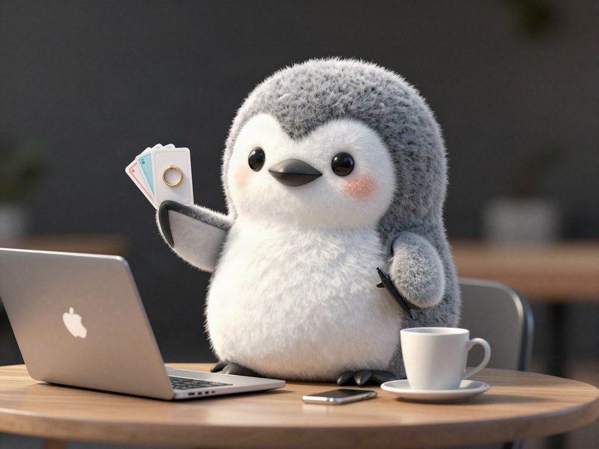
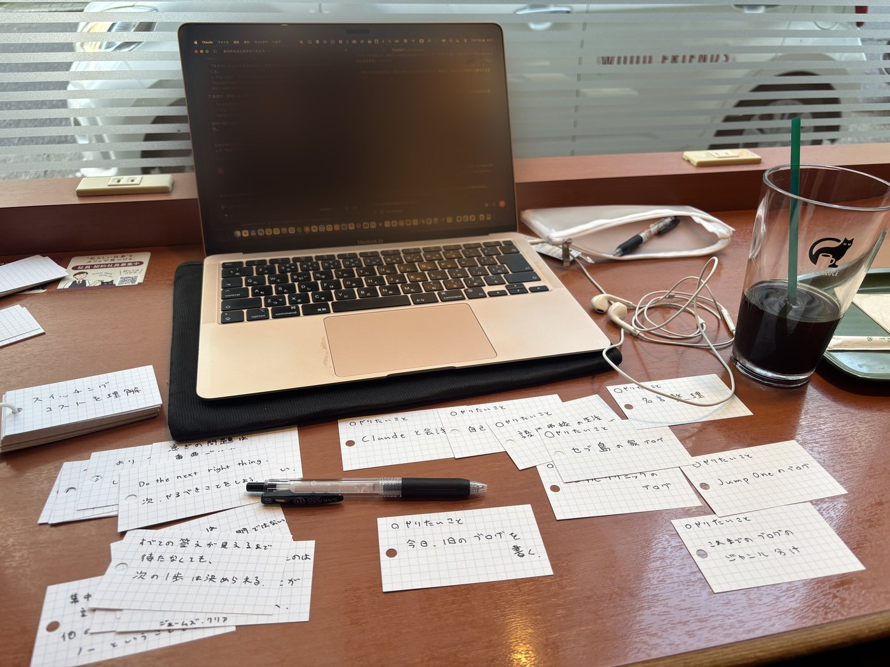

I tried managing my to-do list with flashcards, and I gave up in 2 days 🗂


I thought I might have come up with a new productivity life hack.
I rushed to a 100-yen shop and bought flashcards.
If I write all my to-dos in a notebook, I end up writing too much on the page.
I thought it was hard to see how far I got and which to-do items I have not done yet.
To-do apps are good too.
But I thought, instead of managing my to-dos digitally, if I write them on paper on purpose, maybe it will work well again.
It is a little like the story of when I bought a whiteboard.
This time, my idea was to write each thing I want to do today on a flashcard.
Flashcards are separate cards, so the to-dos are physically split up.
With this, I thought I could have the strongest self-management, controlling myself with a to-do list.
So I scribbled lots of things I wanted to do on these flashcards.
To give the conclusion first, it did not last at all.
Really, I gave up so fast that it did not even last 2 days.
Now I do not even remember where I put those flashcards.
I do not touch the flashcards at all anymore.
This is my self-management method that failed.
Only the moment of writing my to-dos on the flashcards was fun.